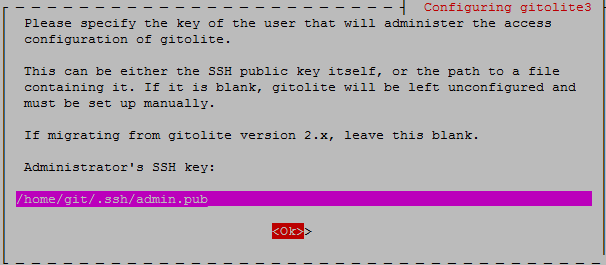

GIT、Gitolite3、Gitweb安裝¶
在多人開發的過程中，為了便於整合不同使用者所建立的內容，在版本管控的多種系統中，如： CVS 、 Subversion 、 Git 幾個主要的系統中選用Git當作開發的版本管控系統，主要為了之後可能會轉移到github上，再加上git的一些特性，如可快速的建立分支，不需中央伺服器即可在本地的檔案庫中做管理等…。
另外搭配 Gitolite 來管理使用者及檔案庫(Repository)，讓管理者便於設定檔案庫的存取權限，Gitolite綁定一個系統帳號，而其他的使用者都是透過ssh key建立，只要把key的名稱設定權限後，即可設定key及檔案庫的讀寫、執行或只能讀取等，並透過gitweb讓使用者用瀏覽器就可以觀看檔案庫的內容、記錄、版本差異、下載等功能。
GIT安裝¶
安裝GIT
sudo apt-get install git-core
新增使用者git
sudo useradd -m git sudo passwd git
設置使用者的git全域參數
sudo su -l git git config --global user.name "username" git config --global user.email "email"
Gitolite3安裝¶
在安裝過程式會出現Configuring gitolite3的畫面，要輸入Administrator’s SSH key，如果尚未產生好ssh key的話可以跳過，之後再設定使用sudo dpkg-reconfigure gitolite3就可以重新設定
安裝gitolite3
sudo apt-get install gitolite3
執行畫面
allen@uServer:/home/git⟫ sudo apt-get install gitolite3 [sudo] password for allen: Reading package lists... Done Building dependency tree Reading state information... Done Suggested packages: git-daemon-run gitweb The following NEW packages will be installed: gitolite3 0 upgraded, 1 newly installed, 0 to remove and 0 not upgraded. Need to get 85.3 kB of archives. After this operation, 352 kB of additional disk space will be used. Get:1 http://opensource.nchc.org.tw/ubuntu/ trusty/universe gitolite3 all 3.5.3.1-2 [85.3 kB] Fetched 85.3 kB in 5s (16.6 kB/s) Preconfiguring packages ... Selecting previously unselected package gitolite3. (Reading database ... 121302 files and directories currently installed.) Preparing to unpack .../gitolite3_3.5.3.1-2_all.deb ... Unpacking gitolite3 (3.5.3.1-2) ... Processing triggers for man-db (2.6.7.1-1) ... Setting up gitolite3 (3.5.3.1-2) ... No adminkey given - not setting up gitolite. Do a dpkg-reconfigure to setup. allen@uServer:/home/git⟫
產生git ssh key
用ssh-keygen指令產生，一般用 ssh-keygen -t rsa 即可產生公鑰、私鑰，預設會建立在家目前中的「.ssh」資料夾中，在建立的過程式可以自行修改公、私鑰的位置及檔名，公鑰預設檔案名稱為「~/.ssh/id_rsa」,，私龠預設檔案名為「~/.ssh/id_rsa.pub」，在產生公、私鑰的過程會要輸入passphrase，預設值是空的，如果要使用密碼請在這裡輸入後再按Enter，這樣之後連線時就會要輸入密碼後才可以登入。如下圖..

以上說的內容可以直接用指令執行後即可產生公、私鑰，「-P」加入密碼(passphrase)，「-f」檔案產生的位置與名稱，如下
ssh-keygen指令
ssh-keygen -t rsa -P 'admin@gitolite' -f ~/.ssh/admin
設定配置gitolite3
執行下方的設定配置指令後會出現設定畫面，首先出現的是設定gitolite3的系統管理者，在這邊我們預設定的系統管理者為「git」
sudo dpkg-reconfigure gitolite3設定「Repository」資料夾路徑，把Repository設在使用者git的家目錄下
接著又回到一開始安裝時要設定的管理者ssh key，這裡用上面所設定admin.pub，要輸入完整的路徑
確認後就會看到下面的畫面，在repositories中將會自動產生兩個repo「gitolite-admin.git及testing.git」及一個projects.list，如下圖
設定gitolite-admin
gitolite-admin主要是用於設定及管理repo與使用者，此外可以設定每個repo的存取權限，gitolite-admin預設只供管理者存取，所以要用設定gitolit3時所設定的administrator’s ssh key來存取設定。
目前使用git使用者，也在此使用者建立ssh key，當做gitolite3的管理者，所以先登入git，並在家目錄中clone gitolite-admin做設定
git clone git@localhost:gitolite-admin.git在git的家目錄把gitolite-admin取出後，進到gitolite-admin資料夾，將會有兩個檔案，分別為「conf/gitolite.conf」與「keydir/admin.pub」
「conf/gitolite.conf」預設的內容如下，在gitolite-admin目前設定只供admin做讀寫及更新，其他使用者無法
「keydir/admin.pub」keydir資料夾是放使用者ssh公鑰的地方，此資料夾中的admin.pub就是在設定gitolite時所輸入的administrator’s ssh key。
Linux 新增使用者到gitolite3
先在自已家目錄中執行ssh-keygen -t rsa 產生公、私鑰，預設會存在~/.ssh/下，將公鑰id_rsa.pub更換名稱，例如目前帳號使用allen，則把id_rsa.pub改成allen.pub，並且把 allen.pub放到gitolite-admin/keydir資料夾下，使用者的公鑰部分可以放到「/tmp」下，這樣切換到時用者時就不需再另外更改檔案擁有者及權限。
在使用者allen下就先cp一份公鑰到/tmp下，
接下來就執行git指令，把使用者的公鑰放到gitolite-admin repo中，在過程中有出現「Enter passphrase for key...」這部分因為在建立admin公、私鑰時有輸入密碼，所以在這個時後就需要輸入之前的密碼以確定執行git push上傳更新。
新增GIT Repo
使用者新增好了之後，我將建立一個給allen專用的repo，加入了
repo allen RW+ = allen這樣設定在gitweb預設不會將repo列出，如果要供大家讀取，則再加入一行即可
R = @all接著做相同的動作，如下
git add . git commit -m 'add repo:allen' git push當執行git指令，把設定檔更新後，回到「~/repositories」中，將會看到自已建立了一個repo「allen.git」
用使用者allen 去clone allen.git，執行完後會如下圖，將會在執行的目錄中增加一個allen的git repo，預設裡面是空的，只有一個.git的設定檔資料夾
repo初始內容
安裝GitWeb¶
安装apache2
sudo apt-get install apache2
設定啟用cgi
sudo vim /etc/apache2/sites-enabled/000-default.conf 把這行前方的#拿掉 「Include conf-available/serve-cgi-bin.conf」 sudo a2enmod cgi sudo apache2 restart
安裝gitweb
sudo apt-get install gitweb
設定gitweb
安裝完後資料放在預設目錄「/usr/share/gitweb/」下，而設定檔放在「/etc/gitweb.conf」，apache2的預設目錄「/var/www/html」，將gitweb會讀取到的相關css及圖檔資料夾static做連結到網站的根目錄
sudo ln -s /usr/share/gitweb/static /var/www/html編輯gitweb.conf設定參數如下圖
sudo vim /etc/gitweb.conf注意$projectroot，$projects_list要改成自已所設定的路徑
- gitweb權限設定
當設定好後啟動apache2，用瀏灠器進入 http://localhost/cgi-bin/gitweb.cgi 會發現出現404，並沒有repo專案出現，在這裡需要做算讀取權限的設定
將git加入群組www-data
sudo usermod -a -G git www-data
資料夾repositories設定為755 檔案projects.list設定為644 資料夾repositories中的repo，原本資料夾權限預設為700，群組的部分不能讀取，如果要開放的話，請將該xxx.git資料夾設定為755，如下方指令要開放testing.git，
chmod 755 -R testing.git
當設定以上的權限後重新啟動apache2即可看到所開放的repo，但如果使用者有做git push後會發現，網頁上該被push過的repo又不見了，但再執行一次chmod 755 -R testing.git後網頁上又出現了，發現在push後有些資料夾的權限會變成預設的700，所以要再做下面的修改，將設定repo預設的建立權限為750，這樣使用者在做push更新時，相關檔案建立時www-data群組就可以做存取的動作，修改如下
在使用者git家目錄下
vim ~/.gitolite.rc
將UMASK的預設值0077改成0027後，存儲並重新啟動apache2，再重新push一次後就會發相部分相關檔案在push後所建立的權限為750，並且gitweb網頁也可以正常的觀看。
參考網站連結¶
- Git 版本控制系統 http://ihower.tw/git/index.html
- 30天精通Git版本控管 http://ithelp.ithome.com.tw/ironman6/player/doggy/dev/1
- Git Community Book 中文版 http://gitbook.liuhui998.com/index.html
- Pro Git Book http://git-scm.com/book/zh-tw